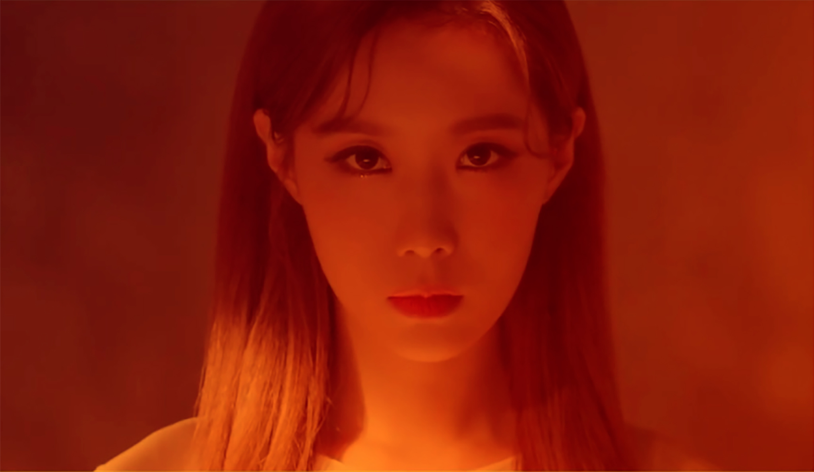

Members
JiU
Kim Minji (김민지), широко известная как JiU, является лидером, ведущей вокалисткой, ведущей танцовщицей и визуалом женской группы «Dreamcatcher» компании Happy Face Entertainment. До дебюта с Dreamcatcher JiU была участницей MINX и участницей YG Survival Show MIXNINE.
Забавные факты
She is one of the members who eats the most, but then works out rigorously to keep in shape
She gave herself the nickname The Pink Princess
Sua
Kim Bo Ra (김보라), also known as SuA, is the Main Dancer, Lead Rapper, and Vocalist of the Girl Group Dreamcatcher. SuA used to be a member of the group MINX. Among the group, SuA trained for the longest amount of time.
Забавные факты
SuA and Siyeon are both big fans of the Avengers
She’s the one who trained longest among all members.
She creates choreographies and has for covers and improve them
Siyeon
Lee Siyeon (이시연) is the Main Vocalist of the Girl Group Dreamcatcher under Happy Face Entertainment. Siyeon used to be a member of the girl group MINX and participant of the YG Survival show MIXNINE.
Забавные факты
She can play the piano.
Handong
Handong is a Chinese singer based in South Korea. She is one of the vocalists of the girl group Dreamcatcher under Dreamcatcher Company. Unlike her members, she wasn't part of the group Minx. She made her solo debut with the chinese single "曙光" ("The First Light of Dawn"), on October 20, 2020.
Забавные факты
Handong's university professor introduced her to Happy Face Entertainment as a musical actress. She passed her audition after singing Taeyeon’s “If.”
Her nicknames are Single, Dongdong, Dongdongie, Wuhan Princess and Wuhan Poisom
Yoohyeon
Kim Yoohyeon (김유현) is the Lead Vocalist of the Girl Group Dreamcatcher under Happy Face Entertainment. She is a former MINX member and a participant on the YG survival show MIXNINE.
Забавные факты
Yoohyeon loves to play video games. Especially PlayerUnknown's Battlegrounds and Overwatch
After a long day of work, Yoohyeon likes to come back, watch simpsons, go to the PC Room and eat and plays games, then go to sleep.
Dami

Lee Yoo-bin (이유빈), popularly known as Dami, is the Main Rapper, Lead Dancer, and Vocalist of the Girl Group Dreamcatcher under Happy Face Entertainment. Dami used to be a former member of MINX and a participant of the YG survival show MIXNINE.
Забавные факты
She is a fan of “One Piece” Manga
She wishes she could raise a pet bear
Gahyeon
Gahyeon is a member of the girl group Dreamcatcher. She is one of the members that wasn’t a member of MINX. Reportedly, Gahyeon studied in the Philippines for a few months.
Забавные факты
She’s best in Math
She remembers all details about the group’s schedule